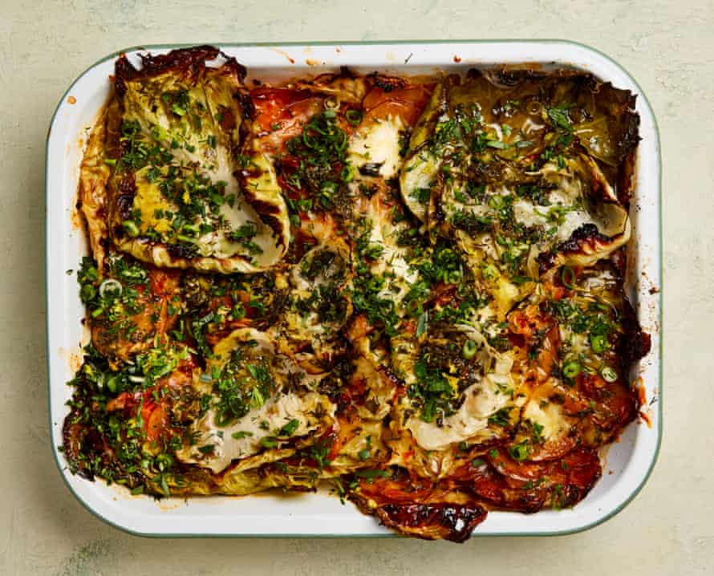

Herby cabbage and potato gratin with gruyère and ricotta

Slow-roasting transforms garlic into a sweet and sticky version of itself, which, when combined with pungent, raw garlic, gives a dish a real umami kick. I’ve taken to roasting four or five bulbs at a time, so I always have some to hand; they keep for four days in the fridge and are great in pasta sauces and soups.
Heat the oven to 200C/390F/gas 6. Take out two garlic cloves from the head of garlic, then drizzle the rest of the bulb with a teaspoon of oil and sprinkle with a little salt and pepper. Wrap tightly in foil and roast for 40 minutes, until the cloves are soft and golden brown. Remove the foil and, when cool enough to handle, squeeze out the cloves and discard the papery skins.
While the garlic is roasting, prepare the rest of the vegetables. Combine the potatoes, shallots and paprika in a bowl with two tablespoons of oil, half a teaspoon of salt and plenty of pepper. Toss the cabbage leaves in a tablespoon of oil, a quarter-teaspoon of salt and lots of pepper. Roughly crush the two reserved cloves of raw garlic and mix with all the herbs, the spring onions, lemon zest and the cooked garlic. Set aside a quarter of the herb mixture – you’ll use it later as a garnish.
Arrange a third of the cabbage leaves over the base of a 20cm x 30cm, high-sided baking dish. Cover with half the potato and shallot mixture, top that with a third of the herb mixture, then dot half the ricotta and gruyère over the herbs. Repeat these four layers again, then top everything with a final layer of cabbage and the last of the herb mixture.
Combine the stock, lemon juice and a quarter-teaspoon of salt and pour evenly over the bake, lifting up some of the cabbage leaves so the liquid sinks down. Cover tightly with foil and bake for an hour and 10 minutes, until the cabbage and potatoes are soft and cooked through. Remove the foil, drizzle over the remaining tablespoon of oil and bake, uncovered, for 10 minutes more, until the cabbage begins to crisp up and turn golden brown. Remove from the oven, leave to cool for 10 minutes, then finish with the reserved herbs and serve.